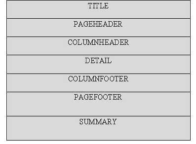

JasperReports - Getting Started
What is Report
A report is meaningful and well summarized information of data from the database. Usually the routine activities are automated and data summarized into a decision-supporting format "Reports". Reports act as wonders when it converts the usual messy data into charming charts, graphs and other graphical representations.
Report template
Generally the following report layout is followed to generate reports by many of the commercial report generating tools.
Following is the description of each element mentioned in the diagram.
| Element | Description |
|---|---|
| title | Title contains the title of the report. It appears only once at the very beginning of the report, for example, "Tutorials Point Report". |
| pageHeader | PageHeader may contain date and time information and/or organization name. This appears at top of each page. |
| columnHeader | ColumnHeader lists the names of those specific fields which you want to display in the report, for example, "Author Name", "Starting Hour", "Finishing Hour", "Hours Worked" and "Date" etc. |
| detail | Detail is the part where entries of the specific fields (listed in columnHeader) are shown, for example "Manisha", "9:00", "18:00", "9", "10.02.2013". |
| columnFooter | ColumnFooter may display summation of any of the fields, for example, "Total Hours Worked: 180" |
| pageFooter | PageFooter may contain page count information. It appears at the bottom of each page, for example, "1/23". |
| summary | Summary contains information inferred from "detail" part, for example, After the number listing of worked hours for each author, total hours worked for each author can be put in visual chart like pie chart, graph, etc for better comparison. |
Jasper Report
Common troubles faced during report development are summarized in the points below:
Core changes: To reflect the business changes or enhancements it usual to change the core logic of the report.
Results exporting: There are a wide range of formats which your report can be exported to, such as: HTML, text, PDF, MS Excel, RTF, ODT, Comma-separated values, XML or image.
Complicated reports: sub-reports and cross-tabs reports are good example.
Charts reports: Visual chart for example. Graph, Pie,XY Line, Bar, Meter and Time series
To remove the overhead of the above mentioned points and to facilitate the reporting process, a lot of frameworks, tools, libraries, and 3rd parties applications were introduced. Jasper Report is one of them.
Jasper Report is an open source java reporting engine, which unlike other reporting tools, for example, Crystal Reports, is Java based and doesn't have its own expression syntax. JasperReports has the ability to deliver rich content onto the screen, to the printer, or into PDF, HTML, XLS, RTF, ODT, CSV, TXT and XML files. As it is not a standalone tool, it cannot be installed on its own. Instead, it is embedded into Java applications by including its library in the application's CLASSPATH.
JasperReports is a Java class library, and is not meant for end users, but rather is targeted towards Java developers who need to add reporting capabilities to their applications.
Features of JasperReports
Some of the main JasperReport features include:
Has flexible report layout.
It can present data textually or graphically.
Developers can supply data in multiple ways.
It can accept data from multiple datasources.
It can generate watermarks.(A watermark is like a secondary image that is laid over the primary image)
It can generate subreports.
It is capable of exporting reports to a variety of formats.